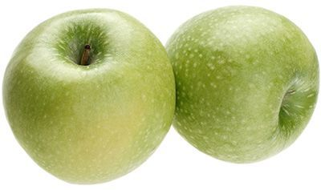

Яблоки Ренет Симиренко
Очень сочное и душистое желтовато-зеленое яблоко — один из самых популярных сортов у российских покупателей. Еще один позднеосенний сорт, который хорошо хранится до июня. Яблоко сладкое, мякоть нежная, с винными, чуть пряными нотками. Отлично подходят для сока и других напитков на основе яблока.
| Цвет плодов: | желто-зеленый |
| Высота дерева: | до 3 м |
| Вес плодов: | 150-200 гр |
| Вкус (сладкий, кислый и тд): | сладкий |
| Время созревания : | сентябрь- октябрь |
| Срок созревания | зимний |
| Срок хранения | до нового урожая |